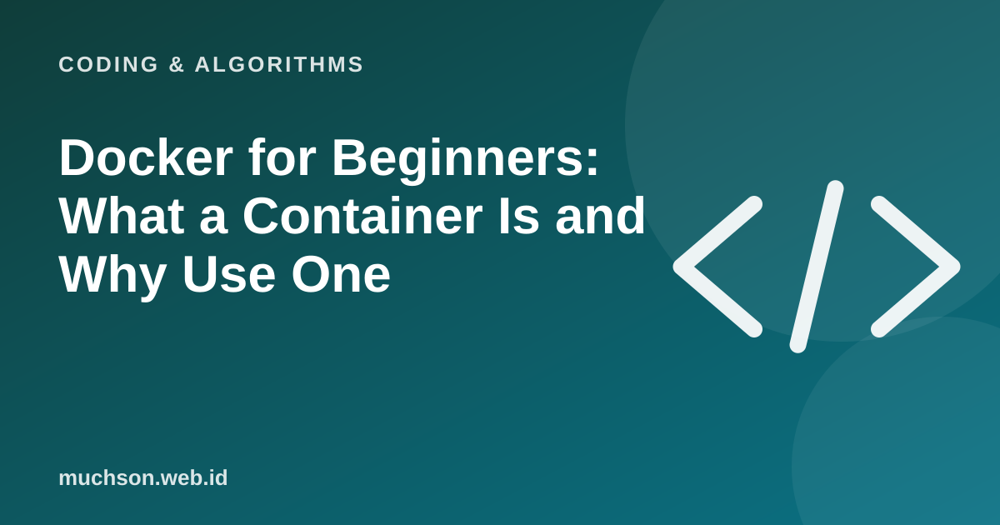

Home › Articles › Coding & Algorithms
Coding & AlgorithmsDocker for Beginners: What a Container Is and Why Use One
"It works on my machine." The sentence developers say most often, and the cause of many headaches. Docker solves it by wrapping the app together with everything it needs into one package that runs the same wherever it goes.

The shipping container analogy
Modern ports use standard containers: whatever is inside, the container can be carried by ship, truck or train without unpacking. Docker does the same for software. The app, its libraries and its configuration are packed up, and can then run on a laptop, a server or the cloud with the same behaviour.
Text description of the diagram
- Your app + libraries (inside a container): Isolated, light, quick to start
- Docker Engine: Runs and manages containers
- Host operating system: Containers share the host's kernel
- Hardware: A laptop or a server
Three main terms
A simple Dockerfile example
FROM python:3.12-slim
WORKDIR /app
COPY requirements.txt .
RUN pip install -r requirements.txt
COPY . .
CMD ["python", "app.py"]# build the image and run it
docker build -t my-app .
docker run -p 8000:8000 my-appWhen is Docker useful?
- The same development environment for the whole team.
- Running a database or supporting service without installing it by hand.
- Deploying to a server or the cloud with predictable behaviour.
- Isolating several apps on one machine.
Security
Never put secret keys inside an image or a Dockerfile. Pass them through environment variables or a secrets manager when the container is run.
FAQ
Is Docker the same as a virtual machine?
The purpose is similar (isolation), the way it works is different. Containers are lighter because they share the operating system kernel.
Do beginners need to learn Docker?
Not at the very start. It becomes useful once you build an app that has to run elsewhere or you work in a team.
What is Docker Compose?
A tool for defining and running several containers at once, for example an app and a database, through one configuration file.